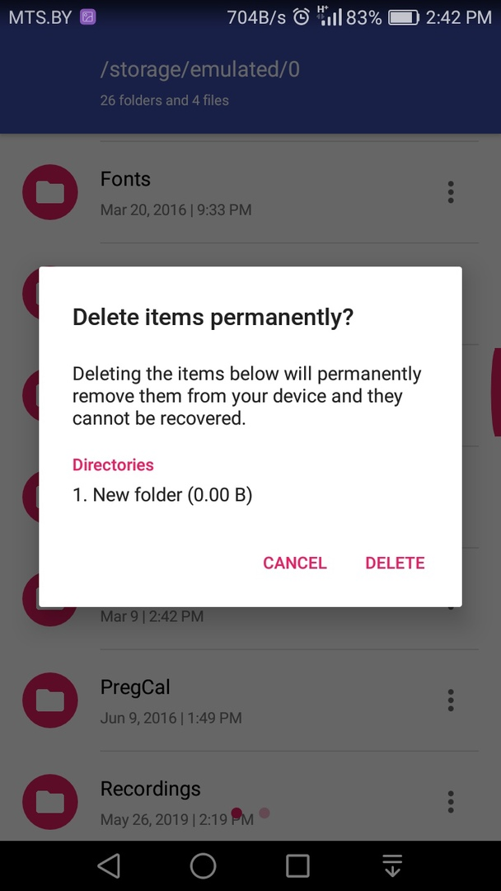

1.(src\main\AndroidManifest.xml)
Задает системное разрешение, которое пользователь должен предоставить для правильной работы приложения. Разрешения предоставляются пользователем при установке приложения (на устройствах под управлением Android 5.1 и ниже) или во время работы приложения (на устройствах под управлением Android 6.0 и выше). Назначение файла:
-
Объявляет имя Java-пакета приложения, который служит уникальным идентификатором;
-
описывает компоненты приложения — деятельности, службы, приемники широковещательных намерений и контент-провайдеры, что позволяет вызывать 3. классы, которые реализуют каждый из компонентов, и объявляет их намерения;
-
содержит список необходимых разрешений для обращения к защищенным частям API и взаимодействия с другими приложениями;
- объявляет разрешения, которые сторонние приложения обязаны иметь для взаимодействия с компонентами данного приложения;
- объявляет минимальный уровень API Android, необходимый для работы приложения;
- перечисляет связанные библиотеки.
Атрибуты AndroidManifest:
- xmlns:android - определяет пространство имен Android. Оно всегда одно и то же
- package - определяет уникальное имя пакета приложения, которое вы задали при создании проекта. Android Marketplace проверяет уникальность при приеме приложения, поэтому рекомендуется использовать свое имя для избежания конфликтов с другими разработчиками. Например, я использую имя своего сайта в обратном порядке: ru.alexanderklimov.appname
- android:versionCode - указывает на внутренний номер версии, используемый для сравнения версий программы. «versionCode» должен быть целым, и Android Market использует это для определения, предоставили ли вы новую версию, передавая триггеру обновления на устройствах, на которых установлено ваше приложение. Как правило. начинается с 1 и увеличивается на единицу, если вы выпускаете новую версию приложения.
- android:versionName - указывает номер пользовательской версии. Можно использовать строку или строковый ресурс. Этот номер видит пользователь.
2. (src\main\AndroidManifest.xml)

С помощью действия "android.intent.action.MAIN" в "intent-filter" мы запускаем файл ".ui.activities.MainActivity", который отвечает за основной функционал приложения.Каждый тег "activity" поддерживает вложенные узлы "intent-filter". Элемент "intent-filter" определяет типы намерений, на которые могут ответить деятельность, сервис или приемник намерений. Фильтр намерений объявляет возможности его родительского компонента — что могут сделать деятельность или служба и какие типы рассылок получатель может обработать. Фильтр намерений предоставляет для компонентов-клиентов возможность получения намерений объявляемого типа, отфильтровывая те, которые не значимы для компонента, и содержит дочерние элементы "action", "category", "data".
3. (src\main\java\com\amaze\filemanager\ui\activities\MainActivity.java)
в методе onCreate мы инициализируем основные функции для работы пользователя с приложением. В данном блоке кода автоматически запускаются следующие функции:
- Восстанвление последнего сеанса работы приложения.
- Данная функция запускает второй поток для приложения, который проверяет есть ли доступ к правам супер пользователя и тем самым разрешает или не разрешает доступ к системным файлам телефона.
- Инициализация функционала кнопки "FAB"(добавить папку или файл, отменить копирование и тд.).
- Инициализация ui меню.
- Инициализация доп. функций(кнопка три точки).
После инициализации всех этих функций пользователь может взаимодействовать с приложением.
4. (src\main\java\com\amaze\filemanager\ui\fragments\MainFragment.java)
Класс Fragment используется для построения динамического интерфейса андроид приложений и взаимодействуют с Activity. Главным преимуществом фрагментов является упрощение работы с UI (пользовательским интерфейсом) на экранах разных размеров. Одна Activity может взаимодействовать с неограниченным количеством фрагментов. В данном файле вызываются функции пользователем в зависимости от его действий. Определены функции для работы с папками и файлами такие как: переименовывание, копирование, вырезание, поиск, сортировка, удаление и тд.
5. (src\main\java\com\amaze\filemanager\ui\fragments\SearchWorkerFragment.java)
Данный метод по запросу пользователя осуществляет асинхронный поиск файлов или папок на устройстве. При удачном поиске данный метод возвращает путь к файлу или папке которую удалось найти и открывает данный путь, при неудачном поиске будет возвращено сообщение о отсутствии таковых.
6. (src\main\java\com\amaze\filemanager\ui\fragments\MainFragment.java)
Эта функция отвечает за переименовывание файлов или папок. В случае некоректного ввода символа функция-валидатор не позволит завершить действие.
7. (src\main\java\com\amaze\filemanager\ui\fragments\MainFragment.java)
Метод onListItemClicked отслеживает нажатие пользователя на элемент списка, находит путь к папке\файлу и производит переход к выбранному пути.
8. (src\main\java\com\amaze\filemanager\ui\fragments\MainFragment.java)
Получает настройки отображения значков и скрытых файлов, после по пути получает список или сетку элементов и выводит их в выбранном виде
9. (src\main\java\com\amaze\filemanager\asynchronous\asynctasks\PrepareCopyTask.java)
Данный фрагмент кода позволяет нам производить копирование пути к файлам или папкам, а затем при помощи этого пути производить копирование файлов\папок.
10. (src\main\java\com\amaze\filemanager\asynchronous\asynctasks\DeleteTask.java)
Данный метод позволяет производить удаление файлов\папок в зависимости от того является ли носитель встроенным или внешним(OTG).
